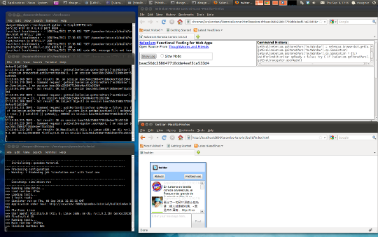

Tutorial Part 4.4.1: Automated UI Testing¶
Having previously covered unit testing, it's time to take a look at qooxdoo's built-in facilities for automated UI testing. Over the course of this tutorial, we'll set up the required infrastructure and develop a test case that interacts with the Twitter application from the previous tutorials.

Simulator: Selenium support for qooxdoo¶
The Simulator component provides the infrastructure necessary to write GUI tests for qooxdoo applications and execute them in a real web browser by way of a Selenium server. The Simulator is based on those parts of the Selenium project that were formerly known as "Selenium RC" and are now referred to as "Selenium 1". While this tutorial doesn't require in-depth Selenium knowledge, you should at least familiarize yourself with its basic concepts and capabilities before reading on.
The testing API: QxSelenium¶
Simulator Test cases are defined as qooxdoo classes inheriting from simulator.unit.TestCase. Similar to unit tests, they live in the namespace of the application they're testing and support the setUp/testSomething/tearDown pattern. Test methods interact with an application by using the QxSelenium API. This consists of the DefaultSelenium API plus several qooxdoo-specific additions. You can get an API reference for these by running generate.py api in the qooxdoo SDK's component/simulator directory and then opening /component/simulator/api/ in your browser.
Setting up the infrastructure¶
For the purposes of this tutorial, we'll assume that you're using a working directory named workspace which contains the Twitter tutorial application in a subdirectory named qooxdoo-tutorial. Replace these paths with your own as appropriate.
The test browser will load the application under test (AUT) over HTTP, so make sure you're running a web server and qooxdoo-tutorial is accessible. If you don't want to install a full-blown HTTP server like Apache, you can use Python's built-in web server module. To do so, open a new shell in your workspace directory and run this command:
python -m SimpleHTTPServer
You should now be able to open the tutorial application by browsing to http://localhost:8000/qooxdoo-tutorial/build/index.html.
Also, a regular Java Runtime Environment (JRE) is necessary on your machine to run Selenium.
Required Libraries¶
The Simulator depends on these external libraries:
- Mozilla Rhino: Download the ZIP archive, extract the ZIP and place js.jar in your workspace
- Selenium Server: Place selenium-server-standalone-2.5.0.jar in workspace
- Selenium Java Client Driver: Extract selenium-java-2.5.0.jar and the libs directory and place them in workspace.
Starting the Selenium Server¶
In a real testing environment, the Selenium server will probably run on a separate machine - in fact, the same client might use different servers to run tests e.g. in Internet Explorer on Windows, Safari on OS X and Firefox on Linux. To keep this tutorial straightforward, however, we'll run the server on the same machine as the AUT. Wherever selenium-server.jar is located, in order to test qooxdoo-based applications it needs to use the qooxdoo user extensions for Selenium. They're located in the Simulator component within the qooxdoo SDK, so start the server with the -userExtensions option set accordingly by running this command in a new shell window:
java -jar selenium-server-standalone-2.5.0.jar -userExtensions <QOOXDOO_PATH>/component/simulator/tool/user-extensions/user-extensions.js
The server should now be listening on the default port, 4444.
Test Configuration Settings¶
The Simulator needs several configuration settings in order to run:
- The paths for the Rhino and Selenium Client Driver JARs
- the host name and port of the Selenium server
- the browser to be used for the test
- and the URI for the application under test
- All these settings are defined by overriding the simulation-run job in config.json (don't forget to uncomment the "jobs" section if necessary):
"simulation-run" :
{
"let" :
{
"SIMULATOR_CLASSPATH" : [
"../selenium-java-2.5.0.jar",
"../libs/*",
"../js.jar"]
},
"environment" :
{
"simulator.selServer" : "localhost",
"simulator.selPort" : 4444,
"simulator.testBrowser" : "*firefox",
"simulator.autHost" : "http://localhost:8000",
"simulator.autPath" : "/qooxdoo-tutorial/build/index.html"
}
}
The simulator.testBrowser key is particularly noteworthy. The value must be one of the browser launcher strings supported by Selenium. *firefox (for Firefox 3+) and *googlechrome should work fine on any platform provided you're using Selenium 2.x as described in this tutorial. *safari usually only works on OS X. Internet Explorer requires some additional configuration but generally works fine for what it is. Whichever browser you choose, it must be installed on the machine that runs the Selenium Server.
The simulator.autHost and simulator.autPath settings are combined to form the URI of the tested application. Adjust these depending on your web server configuration. Also note that you can test either the source or build version of the application - just make sure it's generated before launching the test suite by running generate.py build or generate.py source.
Making the jobs available¶
The Twitter tutorial application was created before the simulation-* generator jobs existed, so if you downloaded the tutorial code from Github, you'll get a "No such job" error if you try to run them. To fix this, you need to add both simulation-build and simulation-run to the "export" list at the top of the application's config.json file. This is not necessary for application skeletons created by more recent qooxdoo SDKs (1.3 and later).
Defining a test case¶
Now that we've got our infrastructure set up, we can finally start writing tests. First, navigate to the subfolder named simulation in qooxdoo-tutorial/source/class/twitter. This is the default location for Simulator tests. In this folder, delete the predefined DemoSimulation.js and create a new file named Settings.js. This will be our test case that is going to interact with the Twitter application's settings dialog. For now, just add a test method stub that will cause the test to fail:
qx.Class.define("twitter.simulation.Settings", {
extend : simulator.unit.TestCase,
members :
{
testChangeLanguage : function()
{
this.fail("Test not implemented!");
}
}
});
Building and running the test suite¶
Time to see the Simulator in action. In the Twitter application's directory, run generate.py simulation-build to create the test application. Note that there is no simulation-source job (yet) so you must run simulation-build every time you modify your test classes.
Once the build job is finished, run generate.py simulation-run. Assuming everything's set up correctly, two Firefox windows should (very briefly) open up and you should see the result of the failing test right on the shell:
----------------------------------------------------------------------------
Initializing: qooxdoo-tutorial
----------------------------------------------------------------------------
>>> Processing configuration
- Warning: ! Shadowing job "simulation-run" with local one
----------------------------------------------------------------------------
Executing: simulation-run
----------------------------------------------------------------------------
>>> Running Simulation...
>>> Load runtime: 87ms
>>> Loading tests...
>>> 1 tests ready
>>> Simulator run on Thu, 08 Sep 2011 14:22:29 GMT
>>> Application under test: http://localhost:8000/qooxdoo-tutorial/build/index.html
>>> Platform: Linux
>>> User agent: Mozilla/5.0 (X11; Linux i686; rv:6.0.2) Gecko/20100101 Firefox/6.0.2
>>> Running tests...
>>> Main runtime: 8887ms
>>> Finalize runtime: 0ms
>>> Assertion error! Test not implemented!: Called fail().
>>> Stack trace:
>>> ERROR twitter.simulation.Settings:testChangeLanguage
>>> Test not implemented!: Called fail().
>>> Test suite finished.
>>> 0 passed, 1 failed, 0 skipped.
>>> Simulator run finished in: 0 minutes 15 seconds.
>>> Done (0m17.20)
You'll notice a warning about the "simulation-run" job being shadowed. Since we're doing that on purpose, we can silence this warning by adding the top-level key "config-warnings" to config.json:
"config-warnings" :
{
"job-shadowing" : ["simulation-run"]
},
Test development¶
Let's replace that stub with something useful now: We want Selenium to use the Twitter application's preferences window to change the language. But first, we should set Selenium's execution speed (the delay after each command is excuted) to a value that will allow us to actually see what's going on, say one second. To do so, replace the this.fail line:
testChangeLanguage : function()
{
this.getQxSelenium().setSpeed(1000);
}
The first real action of the test will be to click the "Preferences" button. This leads us to one of the main challenges when developing Selenium tests: How to locate the right element.
Locator strategies¶
Elements can be located using several different strategies, generic as well as as qooxdoo-specific ones. See the manual for an overview:
In this tutorial, we'll focus on the qxhv locator. Just like qxh, it traverses the application's widget hierarchy, using a syntax similar to XPath to match the widgets it finds to criteria defined by the user.
Note: The Selenium IDE Firefox add-on and the qooxdoo Inspector can be very helpful tools for finding locators and debugging Selenium tests.
The qxhv locator allows us to find any widget with a given "label" property value:
qxhv=*/[@label=Preferences]
A word about locales¶
As you'll be aware if you've completed the Translation tutorial, the Twitter application is localized and will automatically switch the display language if the locale of the browser it's opened in matches one of the supported languages (German, English, French and Romanian). This means that depending on the locale of the browser you're using to run the test suite, you may have to adjust the target value of the Preferences label locator step, e.g. qxhv=*/[@label=Einstellungen] for a German language browser.
Executing commands¶
To simulate a user clicking on the target identified by the locator, we need to combine it with the qxClick command:
// Click the Preferences button
var preferencesButtonLocator = "qxhv=*/[@label=Preferences]";
this.getQxSelenium().qxClick(preferencesButtonLocator);
This should open the Preferences window. To make sure the command worked, we can employ the isElementPresent command, then use an assertion so the test will fail if the window didn't open:
// Check if the Preferences window opened
var settingsWindowLocator = "qxhv=[@classname=twitter.SettingsWindow]";
var settingsWindowPresent = this.getQxSelenium().isElementPresent(settingsWindowLocator);
this.assertTrue(settingsWindowPresent);
If the settings window was a qx.ui.window.Window, we could simply use the class name as the locator step. But that only works with classes from the qx.* name space. For a custom widget class like twitter.SettingsWindow, we need to search by classname, a plain JavaScript attribute supported by all qooxdoo objects. The @propertyName=value locator step covers these as well.
All right, time to execute the test again (don't forget to run simulation-build again first). Assuming all went well and the test passed, the next step is to select one of the language options from the Preferences window. qx.ui.form.RadioButton also has a label property (inherited from qx.ui.basic.Atom), so we'll use that:
// Click the radio button for Romanian
var romanianLabelLocator = "qxhv=[@classname=twitter.SettingsWindow]/*/[@label=Romanian]";
this.getQxSelenium().qxClick(romanianLabelLocator);
Obviously, if your browser's locale is Romanian, this option will already be selected so you should choose a different one.
Following that, we want to close the Preferences window. The close button doesn't have a label, but we can find it by looking for the file name of its icon:
// Click the window's close button
var windowCloseButtonLocator = "qxhv=[@classname=twitter.SettingsWindow]/qx.ui.container.Composite/[@icon=close\.gif]";
this.getQxSelenium().qxClick(windowCloseButtonLocator);
We don't need to use the full resource ID of the icon since the [@property=value] step treats the value as a regular expression.
Again, we'll use isElementPresent to check the result:
// Check if the window was closed
settingsWindowPresent = this.getQxSelenium().isElementPresent(settingsWindowLocator);
this.assertFalse(settingsWindowPresent);
This would be a good time to re-generate and run the test to make sure everything works as expected.
Verifying the language change¶
For the final step of this tutorial, we'll check if the language change was correctly applied to the twitter application. The first approach might be to use isElementPresent to check for the Preferences button with the translated label value (e.g. "Preferinte" for Romanian). That won't work, however, since the value of the "label" property is a qx.locale.LocalizedString object, so the [@property=value] locator step will try to call toString on it. This will return the original, untranslated label so the check will fail. To get the visible, translated string, we need to call the LocalizedString's translate() method. That's where QxSelenium.getRunInContext comes in: It takes a locator and a snippet of JavaScript code which it uses as the body of a new function. This function will then be called in the context of the widget identified by the locator, i.e. "this" will reference the widget instance. The function's return value is then serialized as JSON and returned by getRunInContext. We can use this to compare the translated label value to what we're expecting:
// Get the translated string for the Preferences button label
var translatedLabel = this.getQxSelenium().getRunInContext(preferencesButtonLocator,
"return this.getLabel().translate().toString()");
// Check if the label was translated
this.assertEquals("Preferinte", translatedLabel);
And that's it for this introduction to the Simulator. If you have further questions or encounter any problems getting the tutorial code to run, please contact us on the qooxdoo-devel mailing list.